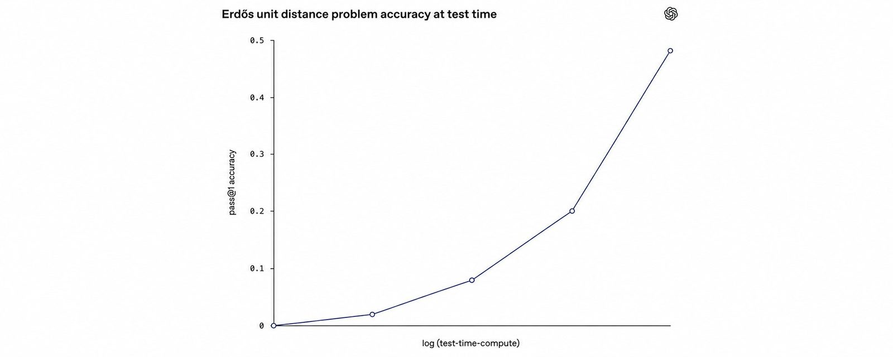
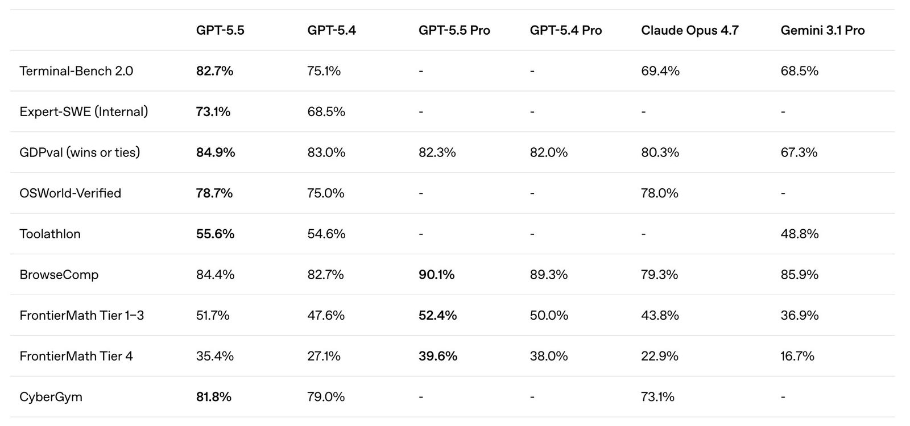
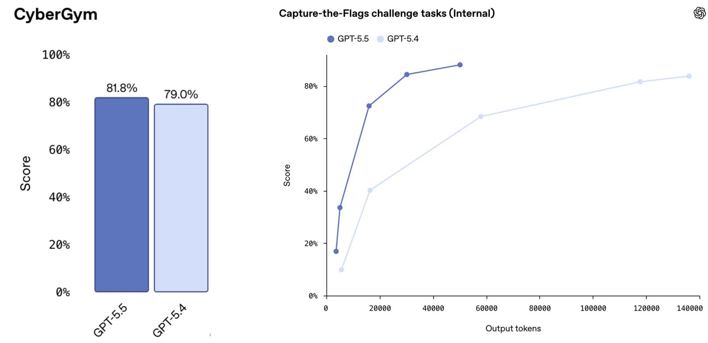
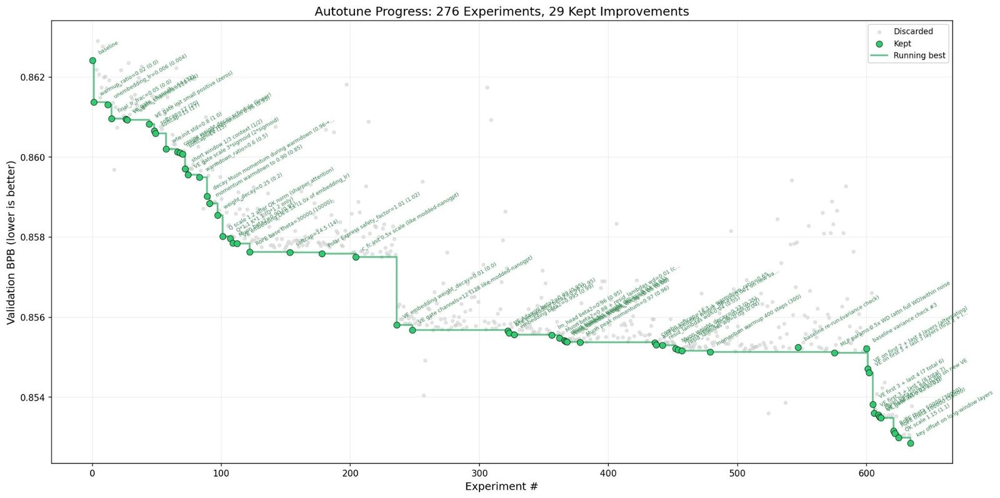
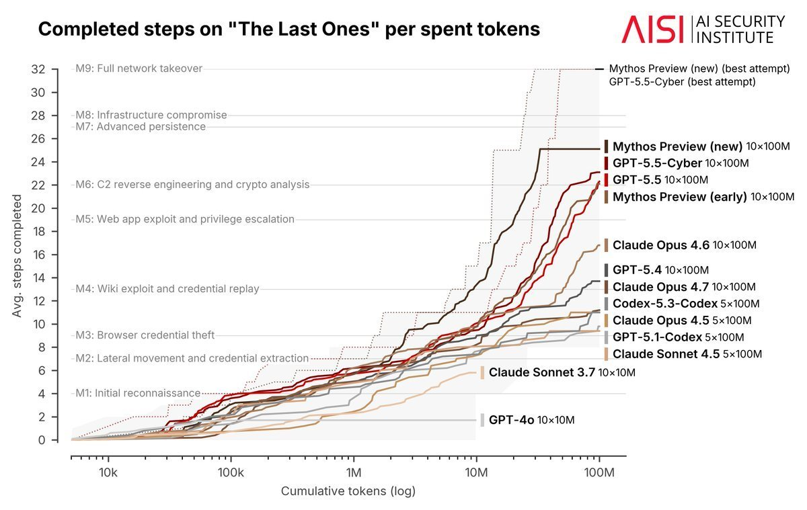
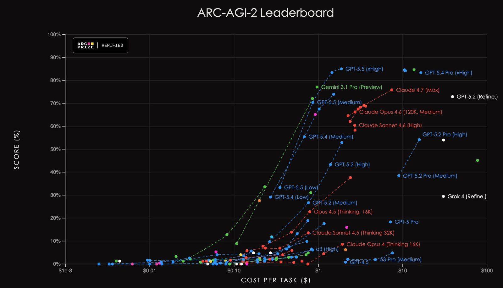
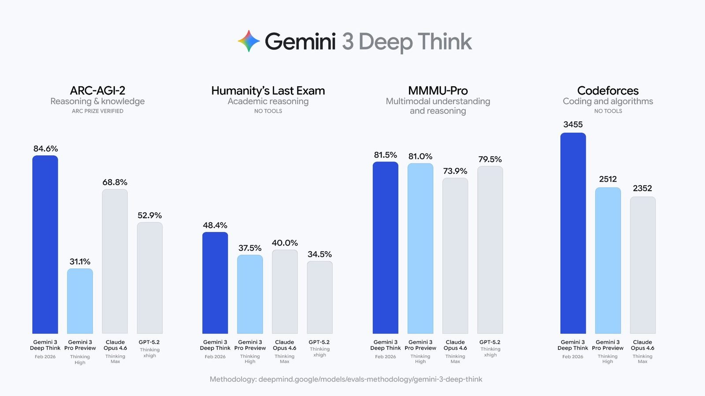
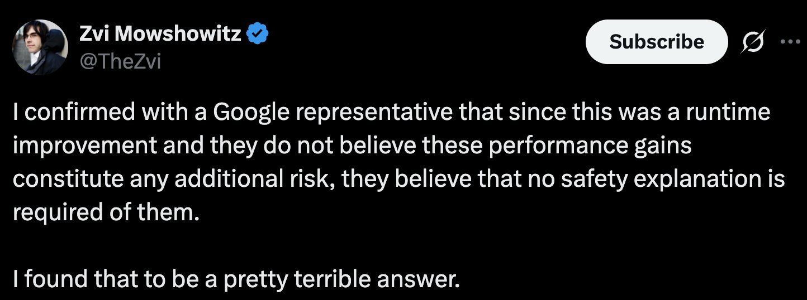
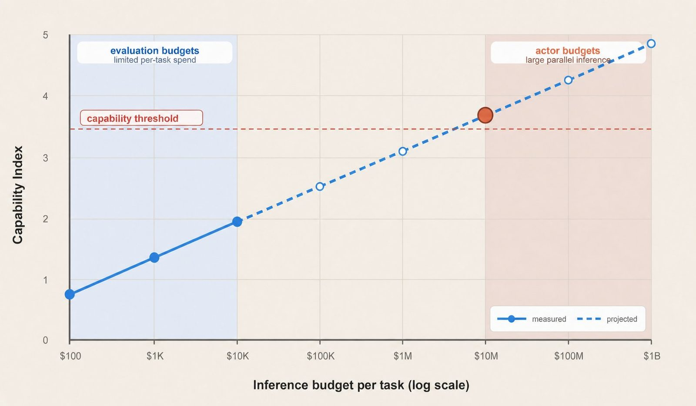

Implications of Large-Scale Test-Time Compute

tl;dr: As LLMs become more capable, benchmark performance is increasingly a function of test-time compute. In fact, we likely don't know what the capability ceiling is for modern LLMs because it's too expensive to measure. We should change LLM evaluations to account for that by measuring performance vs tokens, cost, or time.
The day GPT-5.5 was released, the initial reaction was skepticism. The benchmark numbers were better, but not by much:

However, within hours, once people had time to play around with the model, it became clear that it was a step-change compared to GPT-5.4. The classic "benchmark grid" clearly wasn't telling the full story. Why is that?
The reason becomes clearer when we compare GPT-5.5 to 5.4 with tokens on the x-axis:

Left: On a cyber eval, 5.5's performance doesn't seem that much better than 5.4 when measured at "maximum" test-time compute for each. Right: On a different cyber eval, it's clear that 5.5 is much more capable than 5.4 once we control for tokens/cost/latency.
GPT-5.5 wasn't being evaluated at the same token budget (or dollar budget) as 5.4. Once we control for test-time compute, 5.5 looks substantially stronger than 5.4.
Frequently when I discuss this, people ask why we don't just evaluate with a harness that pushes test-time compute until performance plateaus. The problem is that, empirically, the plateau is very far out. Sometimes we may not observe a plateau at all within practical budgets. Here's @karpathy's autoresearch experiment, where the performance continues to improve even after hundreds of experiments:

And here is the @AISecurityInst's cyber eval, where performance for Mythos and GPT-5.5 continue to improve rapidly even after 100M tokens:

Notice that for the stronger models the performance improvement over time is stronger. It seems likely that as models become stronger they become more effective at operating over longer horizons. The point of plateau is pushed out, and may even disappear.
For this reason, I believe the proper way to evaluate models is with a performance vs test-time compute plot, with either tokens, cost, or wall-clock time on the x-axis. A few benchmarks have already moved in this direction. For example, ARC-AGI measures score vs cost.

Another reasonable option is to set an explicit token/time/cost budget and communicate it to the model. That mirrors how humans are evaluated in settings like the SAT or the International Mathematical Olympiad.
Each x-axis has tradeoffs. Tokens are not directly comparable across models because tokenizers, speeds, and per-token costs differ. Dollars depend on implementation details such as batching and hardware utilization, so cost and latency can trade off. Finally, wall-clock time is an imperfect measurement because multi-agent techniques like best-of-N can scale test-time compute without significantly increasing latency. Still, any of these curves is more informative than a single scalar.
Safety Evaluations and Inference Compute
Before a frontier model is released, labs typically evaluate cyber, bio, and other misuse risks. If a model crosses a capability threshold, then release may be delayed until mitigations are in place. But if capability is a function of inference compute, then at what inference budget should safety evaluations be run?
In practice, most safety evaluations for model releases do not consider the amount of inference that went into the model. The release of Gemini 3 Deep Think, and the resulting outcry, is a useful example.
When Gemini 3 Deep Think was released, its benchmark scores were much higher than previous models. However, no model card evaluating its risks was released alongside it.

This led to outrage from some in the AI safety community.

In my opinion, the criticism of DeepMind's release missed the deeper issue: that AI labs and safety orgs don't consistently account for test-time compute when evaluating models for release.
Deep Think appears likely to be a scaffold of other models that do have system cards. Anyone externally could likely reproduce such a scaffold. In other words, it seems likely that the capabilities of Deep Think were available anyway to anyone willing to pay for Deep Think amounts of inference, by scaffolding a bunch of model queries together. Deep Think just makes that more convenient for the casual user.
In my opinion, the real outrage should have been that when Gemini 3 and other models were released, their system cards did not measure benchmark performance as a function of test-time compute. In my ideal world, model evaluations would look something like this:

A dedicated state actor could apply more than $10 million of inference to a single task. But evaluating a model typically involves thousands if not millions of rollouts, so evaluating at such high compute budgets for every rollout would be impractical. Fortunately, performance seems to scale somewhat predictably with the amount of inference compute applied. For this reason, we could evaluate at relatively low inference budgets and then project (with uncertainty) what capabilities might be at much higher budgets.
Long-horizon evaluations can introduce complexities that may not always be addressed with extrapolation from smaller budgets. For example, it may turn out that the only way to confidently evaluate misalignment in an AI agent at a 1-year horizon is to actually run the agent for a year. AI labs may soon find themselves in a strange position where the operating horizon of their agents exceeds the development cycle of new models. At that point, it may be impossible to finish evaluations of a model over its maximum operating lifetime ahead of release without delaying the release of the model.
Recommendations
Concretely, I recommend the following to the AI community:
- AI labs should publish benchmark performance of newly released models with tokens, cost, or time on an x-axis. At a minimum, labs should report the inference budget used to achieve a scalar benchmark result.
- Benchmarks should track inference usage on leaderboards, or have an explicit token/cost/time budget. Many benchmarks have already shifted in this direction, but it is not yet standard practice.
- Preparedness Frameworks and Responsible Scaling Policies should explicitly account for inference compute when determining whether a model crosses a safety threshold. Additionally, evaluations should estimate capabilities at multiple inference budgets, including projections from smaller-budget runs with stated uncertainty.
If you've followed me for a while, this whole article might seem like nothing new. We've known since the o1 announcement in September 2024 that the performance of reasoning models scales with more inference compute.
And yet, nearly two years later, frontier AI labs still commonly report single-number benchmark results for their new model releases; AI safety orgs are still surprised when a scaffold achieves better performance by using 100x the inference budget; and Preparedness Frameworks and RSPs still often ignore inference compute usage when determining whether a model reaches a critical capability level.
The most recent models are able to leverage test-time compute better than ever, pushing the performance plateau even farther out. If this trend continues, which I fully expect, benchmark scores that don’t account for inference compute usage will become less informative each model release cycle. For this reason, it is time to treat inference budget as a first-class part of both capability measurement and safety policy.